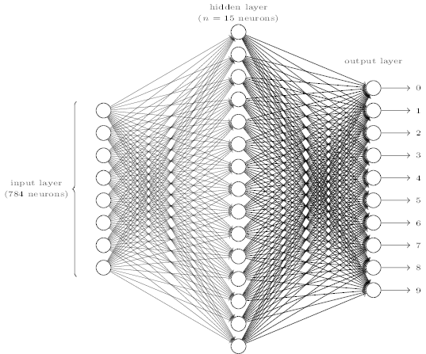
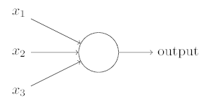
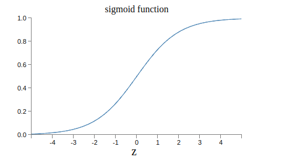
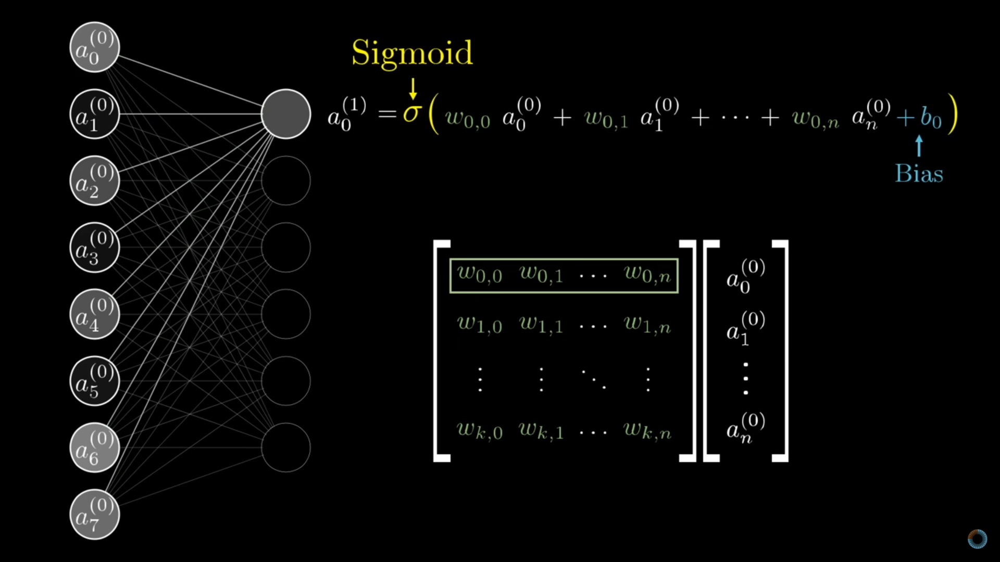
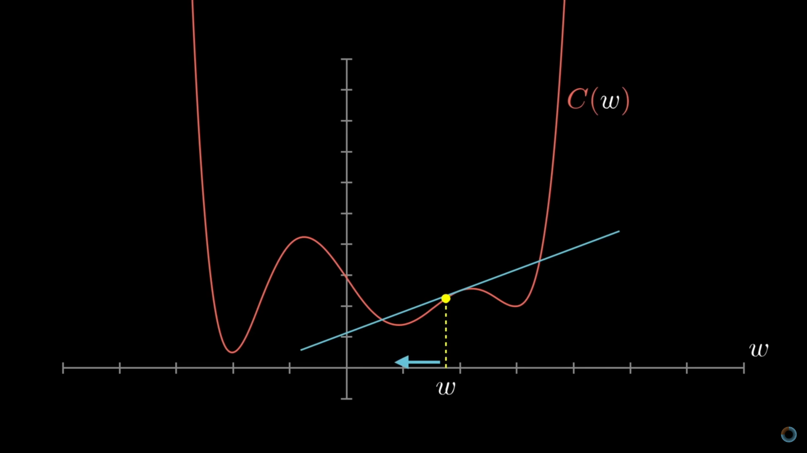
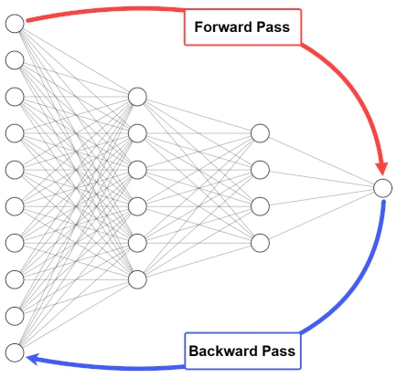

The number of neurons in the input/output layers is related to their application.
1 neuron input with 1 neuron output: Ex. drug dosage and binary response. Like linear regression
N neuron inputs, M neuron outputs: N number of features. M number of categories in classification.
* Example: classification of images into digits. 28x28 input neuron from a 28x28px image and 10 output networks for digits.

It takes several binary inputs \(x_1,x_2,x_3\) and produces a single binary output
Each input has an associated weight \(w_1,w_2,w_3\) indicating the importance of its input to the output.
To calculate the output: \[ output = \left\{ \begin{array}{ll} 0 & \text{if } \sum_jw_jx_j \leq \text{threshold}\\ 1 & \text{if } \sum_jw_jx_j \geq \text{threshold} \\ \end{array} \right. \]
A network of perceptrons could weigh up evidence and make decisions, like computing logical functions with binary operations such as AND, OR or NAND gates.

The output is defined by the sigmoid function:
\[\sigma(z)=\frac{1}{1+e^{-z}}\] \[\sigma(w\cdot x+b)=\frac{1}{1+exp(-\sum_jw_jx_j-b)}\]
Inputs \(x_j\) and single output in the \([0,1]\) range.
Weights, \(w_j\) tell us how important each input is.
Bias \(b\) tell us how high the sum needs to be to activate the neuron.
ANN learning
From: But what is a neural network? | Deep learning chapter 1
 From: But what is a neural network? | Deep learning chapter 1 Matrix operations
Goal: find weights and biases so that the output of the network approximates \(f(x)\) for all training inputs.
To evaluate how well we’re achieving this goal, we define a cost function, also referred to as loss or objective function.
Common one: mean squared error
\[ C(w,b) = \frac{1}{2n}\sum_x ||y(x)-a||^2 \] We want \(C(w,b)\approx 0\), so we want to minimize the function
In \(x,y\), the slope of the derivative is the rate of change of a function at a specific point.

With partial derivatives using the chain rule (from Leibniz)
A very simple example:

We get the derivatives of the cost function with respect to each individual \(w\) and \(b\) and update them according to a learning rate.
We repeat until the change is really small or we reach some other condition.
Training Algorithm
What do we need?
{kind=link}